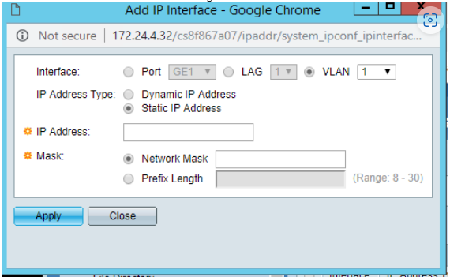

SG350 Standaard Configuratie
SG350 Standaard Configuratie bij Plaatsen
Om sneller te kunnen schakelen hebben we een standaard configuratie gemaakt voor de SG350 switches.
Bij het plaatsen van een dergelijke switch dient het volgende gedaan te worden:
Stap 1: Sluit switch aan op de gewenste locatie en noteer het MAC adres
Stap 2: Zoek in de Sophos van de locatie het IP adres op die de switch heeft gekregen vanuit de DHCP
Log in op de Sophos
Ga naar Network Services
Klik op DHCP
Klik op IPv4 Lease Table
Zoek het MAC adres op met het bijbehorende IP Adres
Stap 3: Typ het IP adres in je browser in en log in met cisco -- cisco (dit wijzigen we later)
Stap4: Ga naar Administration
Klik op File Management
Firmware Operations
Vink Update Firmware aan
Vink http/HTTPS aan
Kies de nieuwste firmware vanuit de map "Monta Services BV\Serviceteam - IT Operations - Documenten\Operations\Netwerk\Configs-Firmware\Cisco\SG350\running-config SG350.txt"
Klik op Apply
Stap 5: Klik op File Operations
Vink Update File aan
Vink Running Configuration aan
Vink http/HTTPS aan
Kies het bestand SG350 Running Config uit de map Y:\8.0 Automatisering\8.0 Handleidingen\8.1.2 Cisco Switches\Plaatsen Cisco SG350 en klik op Apply
Stap 6: Save de configuratie en reboot de switch
Klik bovenin op het knipperede rode kruisje waar Save bij staat
Klik op Reboot
Vink Immediate aan en klik op Reboot
Stap 7: Edit de location en Host Name van de switch Zie afbeeldingen hieronder


Stap 8: Ga naar IP Configuration -> IPv4 Interface en klik op add
- Vink Static IP Adress aan en vul het gewenste IP adres en netwerk mask in 
Stap 9: Stel een LAG in, indien dit nodig is.
Stap 10: Save de configuratie